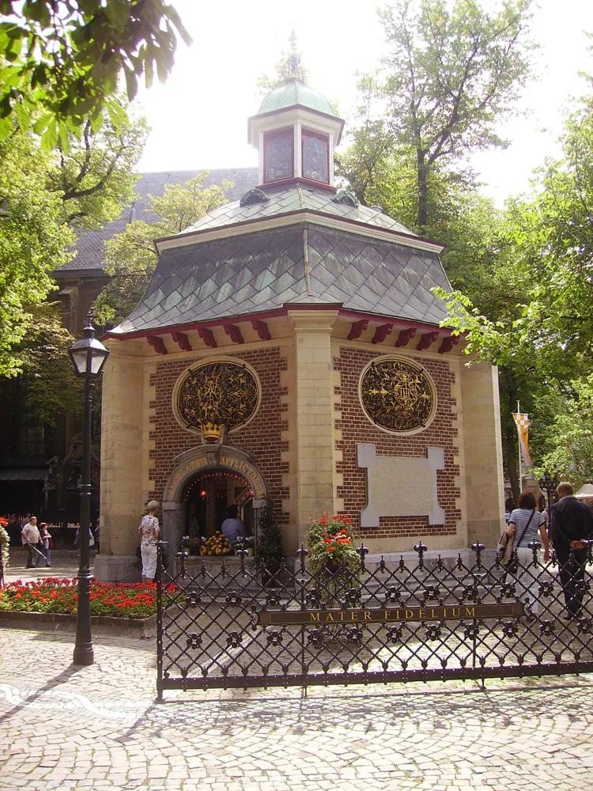
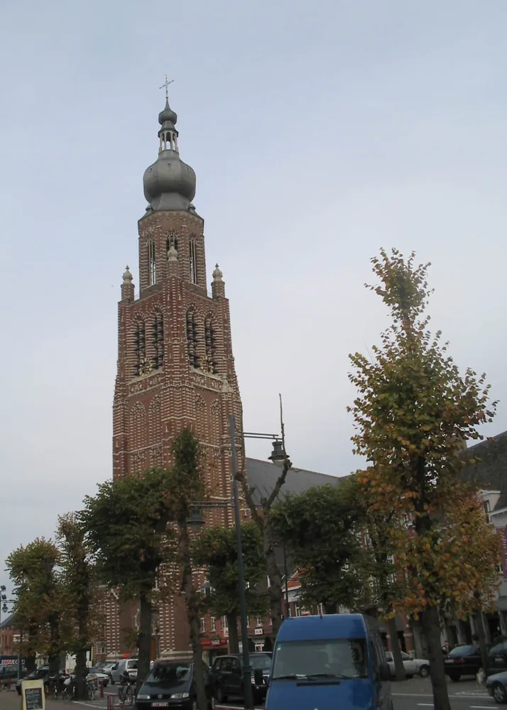

ألفن، سترايبيك، المقابر، انتقال مراكز السكن.
بحث 009 · معاد البناء
أطلس شبكة شام–برابانت · 120 كم
لم يعد الأطلس «25 كم مقدسة». هو الآن سجل عقد تاريخية بثلاث مناطق: قلب 50 كم، شبكة 120 كم، وعقد جذرية أبعد لا تدخل إلا برابط موثق.



طبقات الشبكة
709، ألفهايم، تِكساندريا، فالره، حقوق الكنائس والأملاك.
تونخرلو، القديس ميخائيل في أنتويرب، أفربوده، تورن.
تير براكة، المعبدّيون، فرسان القديس يوحنا/مالطا.
السلطة الإقليمية، البارونية، القلاع والكنائس السياسية.
حدود الاعتراف الديني، انتقال الحج، الحرب والذاكرة.
سجل العقد المرجعي · إصدار 1
هذا السجل هو الطبقة الثابتة للشبكة: نضيف الأدلة والعقد لاحقًا دون إعادة بناء الهيكل. درجات اليقين: A مباشر/أولي، B رابط قوي، C تقليد موثق أو استنتاج حذر، D فرضية اختبار، E سؤال مفتوح.
ألفن ← تونخرلو ← سيد بريدا
تظهر شام في العصور الوسطى كامتداد استيطاني وعقاري متشابك مع ألفن. في 1327 أعفى سيد بريدا تونخرلو من متأخرات رسم على كاتسخوت في شام، وفي 1362 تظهر قطع شامية خاضعة لرسوم الدير. بقي لإختِرناخ أيضًا رسم واحد في براباندر.
401–403 · 709 · 1175 · 1187
العقدة المرجعية: استيطان مبكر ومقبرة ميروفنجية؛ منحة 709 إلى ويليبرورد؛ بقاء الملكية الإختِرناخية حتى 1175؛ انتقال حق الرعاية إلى تونخرلو؛ وأقدم ذكر معروف لبيت المعبدّيين في 1187.
المعبدّيون → الإسبتاريون
كومنديرية تحت ألفن. أقدم ذكر معروف 1187؛ التأسيس الأقدم المنسوب إلى سادة بريدا محتمل لكنه غير محسوم. امتلكت حقوقًا كنسية وعشورًا في أوسترهاوت، وامتدت الشبكة لاحقًا إلى محيط تورنهاوت.
سادة بريدا → ناساو
عقدة السلطة الإقليمية التي تتقاطع مع ألفن وتير براكة وشام. في خينّكن بُنيت كنيسة مركزية نحو 1200 ثم تجمّع السكن حولها نحو 1300، نموذج مقارن مهم لتحول مركز القرية حول الكنيسة.
كنيسة أم · شبكة رعوية
عقدة قديمة مهمة للمقارنة مع ألفن وشام. تُحفظ في السجل كمسار مستقل يحتاج متابعة وثائق الملكية المبكرة قبل ربطه بأي دير على نحو قطعي.
إختِرناخ → القديس ميخائيل/أنتويرب
امتلكت إختِرناخ حق العشور في القرن 9. نحو 1124 مُنح قسم كبير من المجال لدير القديس ميخائيل، وفي 1155 نُقلت الكنيسة إليه. تكريس ويليبرورد يجعلها عقدة مقارنة ممتازة مع ألفن.
ويليبرورد · هوخستراتن
يربط التراث المحلي الملك الملكي «فورسل» بويليبرورد في أوائل القرن 8، ثم أصبح المجال مرتبطًا سياسيًا بهوخستراتن. نعرض المنحة المبكرة بدرجة C إلى أن يُثبت سندها الأولي.
أفربوده 1260/1296 → تونخرلو
كنيسة يُرجح أصلها الكارولنجي. نُقل حق الرعاية إلى أفربوده سنة 1260 وأُدمجت نهائيًا فيها سنة 1296؛ وانتقلت لاحقًا بعض العشور كليًا أو جزئيًا إلى تونخرلو.
دوقية برابانت · تير براكة/مالطا
عقدة سياسية دوقية، ومعها امتدادات موثقة لشبكة الإسبتاريين المرتبطة بتير براكة. تُستخدم لربط الفرع العسكري بالسلطة البرابانتية.
1210 · كنائس أقدم · نخب
حصلت على امتيازات «الحرية» سنة 1210. كشفت الحفريات تحت كنيسة القديسة كاترينا الحالية عن عدة كنائس سابقة، منها مرحلة رومانسكية محتملة؛ ثم صارت مركزًا إقليميًا قويًا في القرن 16.
تير براكة · حقوق كنسية وعشور
ليست مجرد عقدة دينية حديثة؛ المصادر القديمة تربط كومنديرية ألفن بحق التعيين في كنيسة أوسترهاوت وبعشور هناك. لذلك تبقى عقدة فرعية ثابتة في مسار الفرسان.
1130 · 1175 · 1233
العقدة الرهبانية المركزية. تأسست نحو 1130 من رهبان القديس ميخائيل في أنتويرب. أخذت حق كنيسة ألفن من إختِرناخ سنة 1175، وبحلول 1233 أكد البابا كنائس منها ألفن وديِسن ورافلس وبوبل ونيسبن، مع حقوق رعاية في تيلبورخ وزوندرت وغيرها.
1124 → تونخرلو / أفربوده / ميركسپلاس
عقدة منشأ نوربرتينية: منها خرجت جماعة تونخرلو نحو 1130، وترتبط أيضًا بالبدايات الأولى لأفربوده وبامتلاك ميركسپلاس. لذلك هي «عقدة مُولِّدة» وليست مجرد مدينة بعيدة.
1134/35 · أكثر من 30 كنيسة
تأسست نحو 1134–1135، ويرجح أن بدايتها كانت بكانونات من القديس ميخائيل. امتلكت لاحقًا حقوق رعاية وعشور أكثر من 30 كنيسة؛ فرع ويِلده هو اتصالها المباشر بالشبكة المحلية.
تونخرلو · 1233
أكدت الحُجّة البابوية سنة 1233 كنيسة ديِسن ضمن ممتلكات تونخرلو. وجودها مهم لاختبار امتداد الشبكة شرقًا ومقارنة مناطق تِكساندريا.
تونخرلو · 1233
كلاهما يظهر في تثبيت 1233 ضمن كنائس تونخرلو. موقعهما بين ألفن وتورنهاوت يجعل منهما جسورًا مكانية لا مجرد أسماء في سجل الدير.
شبكة تونخرلو الشمالية
في 1233 ثُبتت نيسبن ضمن كنائس الدير، بينما امتلك رئيس الدير حق الرعاية في زوندرت وتيلبورخ. هذه العقد تثبت أن شبكة تونخرلو عبرت المجال الذي ندرسه من الجنوب إلى الشمال.
1629 · التحول الاعترافي
ليست أصل الشبكة المبكرة، لكنها عقدة حاسمة لفهم ما حدث لاحقًا لرعايا تونخرلو في شمال برابانت: بعد سقوط المدينة 1629 حُظر تدريجيًا المذهب الكاثوليكي العلني واضطر كهنة الدير للعمل سرًا.
ويليبرورد · ألفن 709–1175
العقدة الخارجية الإلزامية. لا تُضم بسبب المسافة بل لأن ألفن دخلت شبكة ويليبرورد المؤسسية، وبقيت حقوق إختِرناخ حاضرة قرونًا. أي تحليل لألفن من دونها ناقص.
4797 وثيقة + 967 سجلًا
عقدة مصادر وليست موقعًا فقط: أرشيف الدير يحفظ وثائق وسجلات وخرائط وملفات منذ 1130/33؛ قسم السجلات متاح رقميًا عبر BHIC. هذه هي بوابة التوسع القادم من دون تغيير البنية.
مسارات مثبتة يجب أن تبقى ثابتة
ألفن 709→ويليبرورد/إختِرناخ→تونخرلو 1175
القديس ميخائيل/أنتويرب→تونخرلو 1130→ألفن + ديِسن + رافلس + بوبل + نيسبن
ألفن/تير براكة→المعبدّيون→الإسبتاريون/مالطا→تورنهاوت/أوسترهاوت
إختِرناخ→ميركسپلاس→القديس ميخائيل/أنتويرب
أفربوده→ويِلده→عشور لاحقة لتونخرلو
حدود ما لم نثبته بعد
لا نثبت حاليًا: أن كل كنيسة مكرسة لويليبرورد أسسها شخصيًا؛ أن سادة بريدا أسسوا تير براكة في سنة بعينها قبل 1187؛ أن سكان كيرك أكّرس هم أنفسهم أصحاب مجال 709 عائليًا؛ أو أن التشابه بين أسماء/رموز المواقع يدل على علاقة. تبقى هذه D/E حتى يظهر سند أقوى.
سياسة الإدخال: كل عقدة جديدة تحتاج واحدًا على الأقل من: وثيقة ملكية/رعاية، علاقة مؤسسية، حدث مشترك موثق، طريق حج موثق، أثر زمني متصل، أو علاقة سياسية مباشرة. القرب وحده لا يكفي.